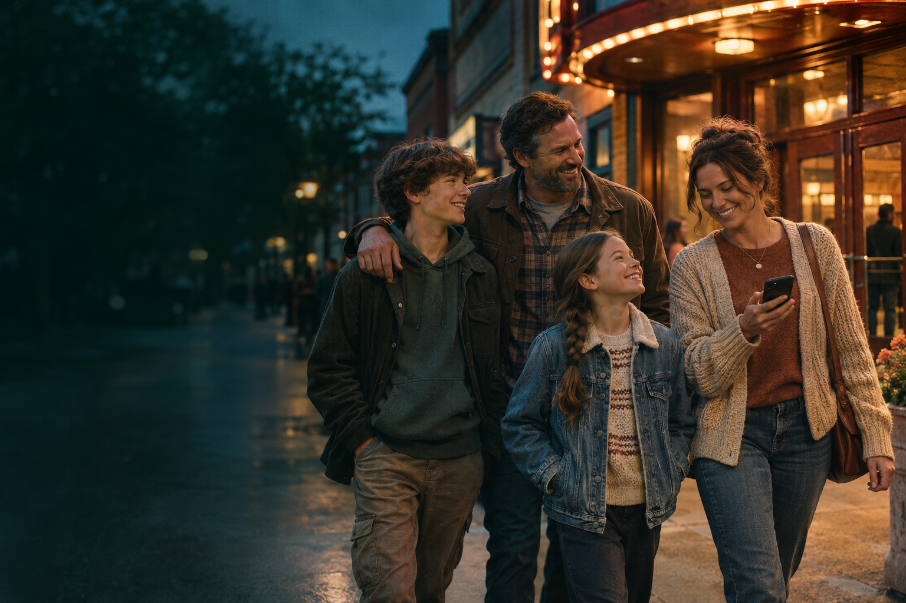

One community. Three brand directions.
Angel has built a community around stories that matter. What could it look like to help those families stay connected, every day?
Three distinct expressions of one wireless partnership idea. Start with Called.

02 / Community & participation
A stronger connection. Together.

03 / Encouragement & expression
Put a little good into every day.
The idea underneath every name
A competitive household wireless offer, with a visible benefit for paid Guild members and recurring commercial contribution for Angel.
Angel leads its brand and member experience. Freeman Signal organizes the proposed wireless partnership, integration and operating accountability. Every offer has to earn its place through real service and real economics.
Explore the partnership model ↗